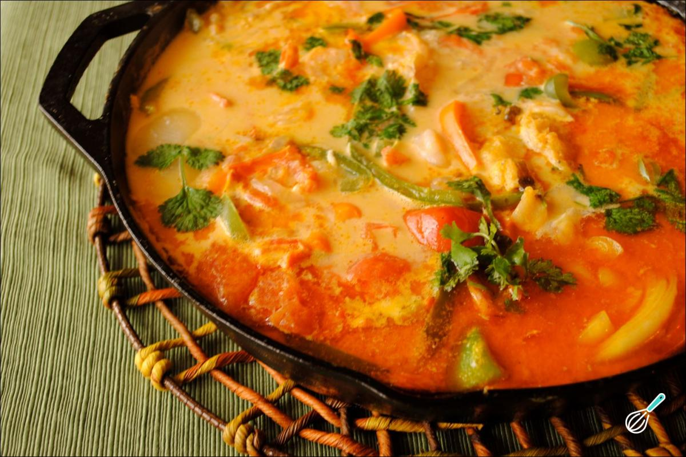

/ Receitas / Moqueca Baiana
Moqueca Baiana
Clássico da culinária baiana, feita com peixe fresco, leite de coco, azeite de dendê e temperos que trazem todo o sabor do litoral.
Nível Médio

Ingredientes
- 1 kg de peixe em postas (robalo ou badejo)
- 2 colheres (sopa) de suco de limão
- 2 cebolas grandes em rodelas
- 2 tomates grandes em rodelas
- 1 pimentão vermelho em tiras
- 1 pimentão amarelo em tiras
- 4 dentes de alho picados
- 1 maço de coentro picado
- 200 ml de leite de coco
- 3 colheres (sopa) de azeite de dendê
- Sal e pimenta-do-reino a gosto
Modo de preparo
- Tempere as postas de peixe com o suco de limão, sal e pimenta-do-reino. Reserve por 15 minutos.
- Em uma panela larga, faça uma cama com metade da cebola, do tomate e dos pimentões.
- Disponha as postas de peixe sobre os legumes e cubra com o restante da cebola, do tomate e dos pimentões.
- Adicione o alho picado, regue com o azeite de dendê e o leite de coco.
- Leve ao fogo baixo, com a panela tampada, e cozinhe por cerca de 25 minutos ou até o peixe estar macio.
- Finalize com o coentro picado e sirva quente com arroz branco.
Dica do chef
Para um sabor ainda mais autêntico, use peixe fresco do dia e azeite de dendê de boa qualidade.